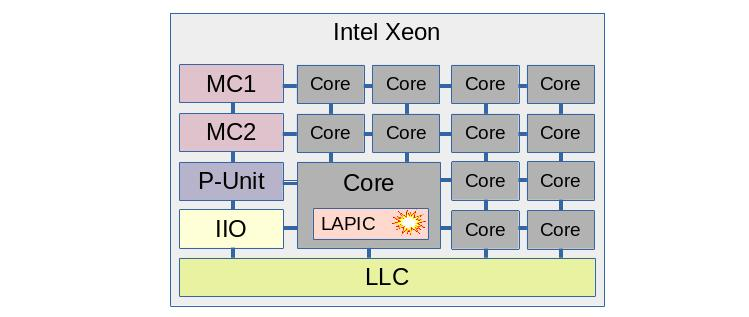
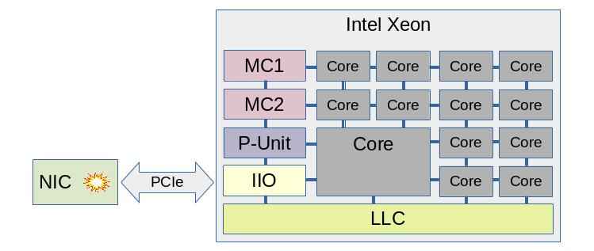

Overview
Table of Contents
Wult stands for "Wake Up Latency Tracer", and this is a project providing tools for measuring C-state latency in Linux. The project provides 2 tools:
- wult - measures CPU C-state exit latency in Linux. This is the main deliverable of the project.
- ndl - measures the memory access latency observed by a PCIe network card when the CPU is is in a C-state. However, this is a much more of a "niche" tool documented in a separate section.
Important note: both wult and ndl are research, debugging and tracing tools which require superuser privileges and must not be used in production environment.
The documentation for this project is scarce and imperfect, but we are improving it over time. Feel free to make specific requests or ask questions by filing GitHub issues or e-mailing Artem Bityutskiy <dedekind1@gmail.com>.
1 Wult presentation
Here is a video recording of wult presentation by Artem Bityutskiy at Linux Plumbers Conference in 2019. The presentation begins at "2:17:50" and it gives a high level wult introduction.
The presentation focuses on wult kernel drivers and some of the details may be out of date. But here important highlights.
- We did not submit wult drivers upstream yet.
- In addition to the I210 NIC measurement method, wult also supports the "timer" measurement method, so it will work on any modern x86 system even without an Intel I210 NIC.
1 Principle of operation
Here is how wult works at a very high level.
- Schedule a delayed interrupt to happen at future time LaunchTime.
- Let the CPU enter a C-state, where CPU stops executing instructions and saves power.
- At LaunchTime, the delayed interrupt fires and the CPU starts exiting the C-state. This process will take some time.
- When the CPU starts executing instructions, we take the time after idle timestamp (TAI).
- The C-state exit latency is TAI - LaunchTime.
This process is repeated tens or hundreds of thousands of times and the data are collected in a CSV file. Wult provides a capability for analyzing the CSV file (finding the median, percentiles, etc) as well as a capability for visualizing the test results (scatter plots, histograms).
1.2. Measured CPU
By default, wult measures C-state latency of CPU 0 (the first CPU you'll see in '/proc/cpuinfo'). The delayed interrupts are affinitized to the measured CPU. However, you can measure any other CPU as well - there is a command line option for this. But only one CPU is measured at a time.
1.3 Measurement methods
Today wult supports two delayed interrupt sources: nic and timer.
- Timer - the interrupt comes from the Local APIC timer block of the measured CPU.
- Nic - the interrupt comes from a PCIe NIC (network card).
The C-state latency measurements vary depending on the source of the delayed interrupt. We refer to these also as "nic" and "timer" (or "tdt") measurement methods. More on "timer" vs "nic" is in this section.
2 Usage models
There are 2 wult usage models - local and remote.
2.1 Local usage

In case of local usage model, the user runs wult on the SUT. Wult measures the SUT and stores the measurement results on the SUT.
2.2 Remote usage
In case of local usage model, the user runs wult on the controller. Wult connects to the SUT over the network, exercises the SUT, and stores the results on the controller.
In the remote usage model a single controller may exercise many SUTs at the same time (multiple instances of wult running simultaneously). The can be stored at the same place on the controller.
3 The hardware setup
Since the CPU is already equipped with timers, the "timer" measurement method does not require anything special. Just run wult in local or remote modes. In case of the "nic" method, the SUT (System Under Test) should have an Intel I210 NIC.
Intel I210 is a 1GbE network chip, several vendors ship (or shipped) network cards based on I210. For example, we use the HP I210-T1 Network Adapter (E0X95AA).
Plug the network card to an appropriate PCIe slot (check this section). You do not need to connect this NIC to the network (no cable needed).
The important thing, however, is that you should not use this NIC for anything else, it has to be dedicated to wult. It is OK to have multiple I210 adapters on you system, as long as one of them is dedicated to wult. Here are two example SUT configurations.
In the left picture the SUT has only one NIC dedicated to wult. The SUT is not connected to any network and the user is logged in via a physically attached keyboard and monitor.
In the right picture the SUT is connected to a LAN with another NIC, but it has a separate NIC is dedicated to wult. The user is logged in via SSH.
4 Interrupt source
Measuring C-state wake latency is based on delayed interrupts, and today wult supports two delayed interrupt sources: nic and timer.
4.1 Timer
In case of the "timer" interrupt source wult uses the CPU timers for scheduling delayed interrupts. On most modern Intel chips every core has a LAPIC block which provides the capability of arming timers for this core. Wult uses the "TSC deadline timers" LAPIC capability to arm delayed interrupts that fire at a very precise moment in the future. This is why wult's "timer" measurement method is also referred to as "tdt" (TSC Deadline Timer).
The picture illustrates a timer interrupt on an Intel Xeon chip. The chip contains many cores, but only one core is being measured (in case of hyper-threading, on hyper-thread within the core is measured). This core has a LAPIC block, and the interrupt is generated by LAPIC.
Just for reference: MC is a Memory Controller, LLC is the last level cache (shared between the cores). P-unit is a microcontroller that is responsible for power and performance features like C-states, P-states, etc. This is just an example, and different Intel chips have a different design.
4.2 Nic
In case of the "nic" interrupt source the interrupts are generated by a PCIe network card (NIC).
Notice that the interrupt source is much further from the measured core in this case. The interrupt signal has to travel via PCIe link(s) and bridge(s) into the IIO block, and then it gets routed to the measured CPU.
Today, only the Intel I210 NIC is supported, but more NIC types may be supported in the future. This NIC has a built-in crystal oscillator and provides an independent clock, which can be read by the CPU. The CPU can program the NIC to generate an interrupt when NIC's clock counter reaches certain value.
4.3 Timer vs Nic
Both NIC and timer methods measure CPU C-state latency, and they may produce similar or different result depending various factors. Let's look at some of them.
4.3.1 C-state pre-wake
Some Intel CPUs have able to pre-wake the CPU from a C-state if there is a timer firing soon. The P-unit on such systems is timer-aware and optimizes some of the C-states. Not every Intel chip, however, has this feature.
Interrupts from a NIC are cannot be predicted by the P-unit and therefore, the C-state pre-wake feature cannot reduce the measured C-state latency.
Here is an example test result for an Intel Xeon E5-2697 v2 system. It is actually a diff comparing C-state latency for the "nic" and "timer" measurement methods. The deepest C-state was C6. Notice that the median wake latency is 73.8us (nic) and 17.6us (timer). The timer method shows about 76% latency reduction.
In the example, the report ID for the "timer" method is "ivt-tdt-c6-hfm-noaspm". Just for convenience, here is a small decoder:
- ivt - comes from IvyTown, name of the server platform that we tested.
- tdt - comes from "TSC Deadline Timer", another name for the "timer" method that we use.
- c6 - the deepest C-state Linux was allowed to request when we ran wult.
- hfm - comes from "High Frequency Mode", same as base frequency. This means that in this test result we locked CPU frequency to HFM, so CPU frequency transitions were disabled.
- noaspm - PCIe ASPM was disabled.
4.3.2 PCIe ASPM
PCIe ASPM (Active State Power Management) is a PCIe power management feature, described in PCIe specifications and supported by many Intel chips. This feature is about PCI links power management - when a link is not used, it can be sent into a low power state such as L1. In this state the link cannot be used, so when there are data to transfer, the link is transitioning to the L0 state. This transition takes time and often requires link re-training.
PCIe ASPM is typically transparent to Linux - the hardware and firmware manages link states automatically. However, Linux can enable and disable ASPM for PCIe devices.
Enabling PCIe ASPM for the I210 NIC will increase the measured C-state latency when using the "nic" method, and won't affect the measured C-state latency when using the "timer" method.
Here is a diff for an Intel Xeon E5-2697 v2 system. It compares C-state latency for PCIe ASPM enabled and disabled configurations. The deepest C-state was C6. The median wake latency is 82.6us (ASPM on) and 73.8us (ASPM off), which means that PCIe ASPM adds about 8.8 microseconds to the median.
4.3.3 PCI topology
In case of the "nic" measurement method, the location of the NIC in the PCIe matters. E.g., consider a 2-socket server system with the following PCIe slots.
- Slot A is connected directly to the IIO block (part of the "north complex") of socket 0.
- Slot B is connected directly to the IIO block of socket 1.
- Slot C is connected to PCH, which is connected to socket 0.
Suppose we are measuring C-state latency of CPU0, which is on core 0 of socket 0. In this case Slot A provides the shortest and fastest path. Slot B provides a bit longer and slower path, because interrupts (typically MSI messages) will be delivered to socket 1, and then to socket 0. And slot C provides provides a longer path as well.